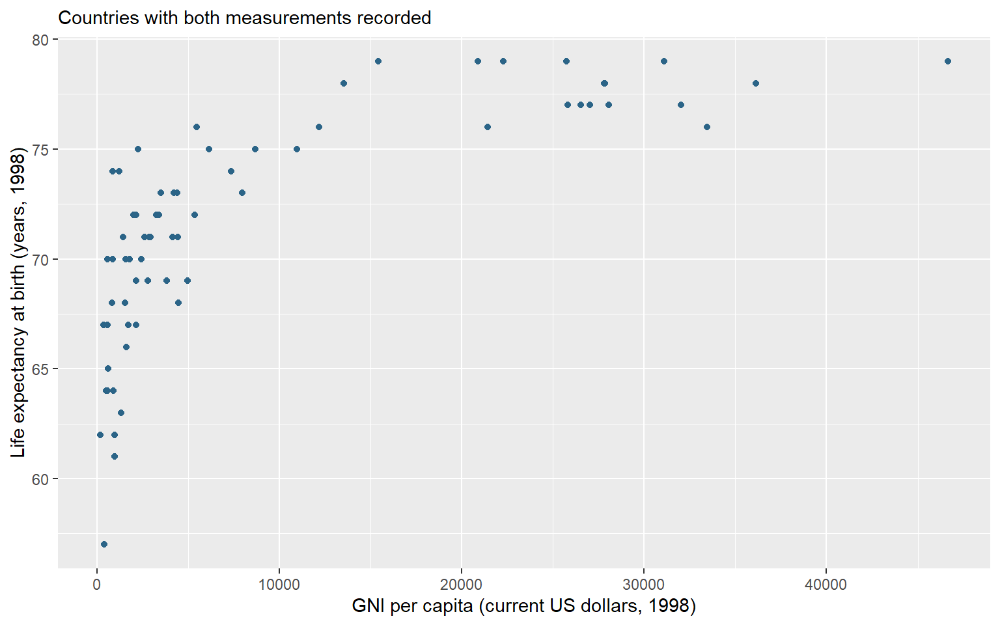
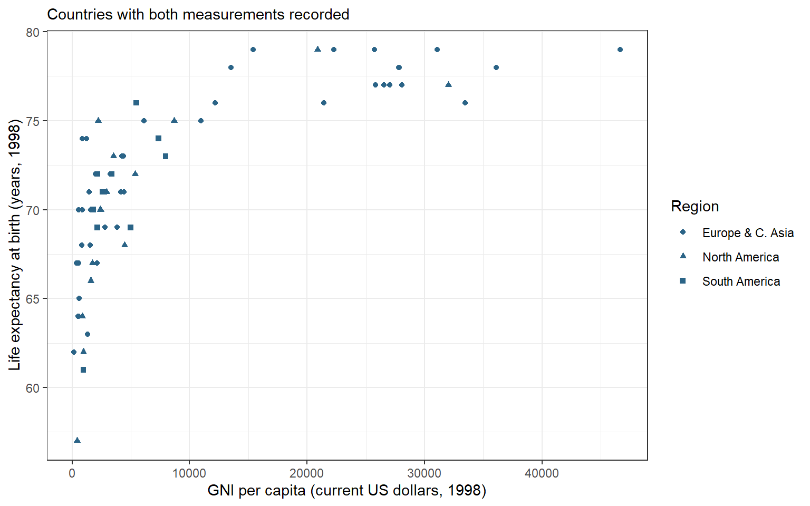
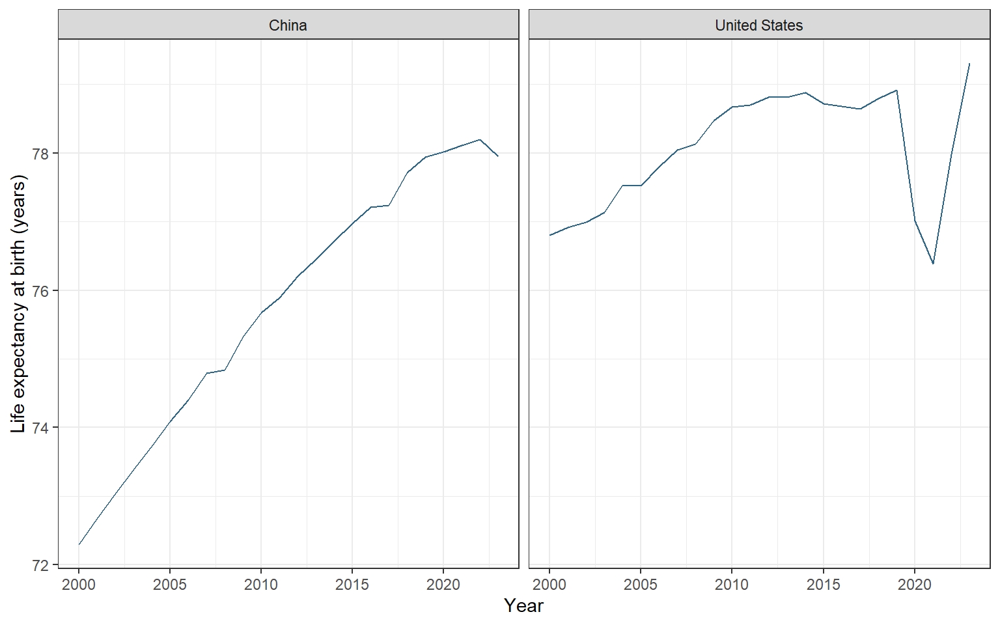

The first graphs in Chapter 11 helped us explore relationships, distributions, and category shares. A figure for a research paper or presentation also needs deliberate decisions about its analysis sample, group distinctions, panel scales, labels, and saved dimensions. We now use the table and variable operations learned since that chapter to prepare those comparisons explicitly.
By the end of this chapter, you will be able to:
Prepare the observations and categories needed for a grouped figure.
Distinguish mapping a variable from setting a constant appearance.
Build annual trend panels and check their coverage and common scales.
Distinguish a visual zoom from selecting observations.
Refine labels and a theme, then export an explicit plot object.
This chapter builds on the plotting grammar from Chapter 11, selecting observations, creating columns, and factors from Chapter 15. We use those tools to construct figures in stages. We return to the country data from the early manipulation chapters, then move to annual country records when the question requires a time series.
Load tidyverse for ggplot2 and the table operations, and tidystata for lifeexp. Copy the captured OWID file into your project’s examples folder. read_csv() restores that public table as owid. No GSS file is needed for this chapter.
library(tidyverse)
── Attaching core tidyverse packages ──────────────────────── tidyverse 2.0.0 ──
✔dplyr 1.2.1 ✔readr 2.2.0
✔forcats 1.0.1 ✔stringr 1.6.0
✔ggplot2 4.0.3 ✔tibble 3.3.1
✔lubridate 1.9.5 ✔tidyr 1.3.2
✔purrr 1.2.2
── Conflicts ────────────────────────────────────────── tidyverse_conflicts() ──
✖dplyr::filter() masks stats::filter()
✖dplyr::lag() masks stats::lag()
ℹ Use the conflicted package (<http://conflicted.r-lib.org/>) to force all conflicts to become errors
library(tidystata)
Attaching package: 'tidystata'
The following object is masked from 'package:dplyr':
recode
owid <-read_csv("examples/life-expectancy.csv")
Rows: 21565Columns: 4──Column specification────────────────────────────────────────────────────────Delimiter: ","
chr (2): Entity, Code
dbl (2): Year, Life expectancy
ℹ Use `spec()` to retrieve the full column specification for this data.
ℹ Specify the column types or set `show_col_types = FALSE` to quiet this message.
22.1 A relationship between countries
Do countries with higher income tend to have higher life expectancy? In lifeexp, gnppc records GNI per capita using the Atlas method, in current US dollars in 1998. lexp records life expectancy at birth in years in 1998. Each point will represent a country, so both measurements must be recorded to locate it. Check the familiar summary’s n column before plotting:
nrow(lifeexp)
[1] 68
summ(lifeexp, gnppc, lexp)
# A tibble: 2 × 8
name type n unique min mean sd max
<chr><chr><int><int><dbl><dbl><dbl><dbl>1 gnppc dbl 67 64 170 9137. 11497. 46650
2 lexp dbl 68 20 57 71.7 5.16 79
All 68 countries have life expectancy recorded, but only 67 have income recorded. Therefore, 67 countries can contribute points. The missing income is not zero.
ggplot() receives a data frame and returns a plot object. Inside it, aes() defines mappings: x = gnppc positions countries horizontally by income, and y = lexp positions them vertically by life expectancy. geom_point() adds a point for each country with both coordinates. The + operator adds a plotting layer; put it at the end of the line when continuing on the next line.
Set na.rm = TRUE in the layer to omit countries that cannot be positioned because a coordinate is missing. This choice avoids a warning about that explained omission; it neither replaces the missing value nor removes a row from lifeexp.
Assignment stores the plot without displaying it. The hexadecimal value specifies the book’s blue. Because color is outside aes(), it sets one appearance for every point. Only the variables inside aes() determine positions here.
labs() labelled axes in Chapter 11. Its additional subtitle argument puts a short line of context above the panel. Here it identifies the complete-pair sample. A subtitle belongs inside the plotted image; the automatic figure caption below it also records units and context when the figure is read in the book. Add the labels to the saved object, assign the updated result, then type its name to display it.
country_plot <- country_plot +labs(x ="GNI per capita (current US dollars, 1998)",y ="Life expectancy at birth (years, 1998)",subtitle ="Countries with both measurements recorded" )country_plot

Figure 22.1: GNI per capita and life expectancy in 1998. Each point is a country with both measurements; GNI uses the Atlas method in current US dollars.
Figure 22.1 suggests higher life expectancy at higher incomes, with substantial variation at the lower end of the income distribution. A horizontal distance measures a dollar difference; a vertical difference measures years. This is an association among countries in the dataset. It neither estimates an individual income effect nor shows that changing national income by itself causes a particular change in longevity.
22.2 Add regional context
Do countries with higher income tend to have higher life expectancy within the recorded regions? Return to the country relationship in Figure 22.1. gnppc records GNI per capita using the Atlas method, in current US dollars in 1998; lexp records life expectancy at birth in years in 1998. This time we prepare the complete country pairs in an object before plotting and distinguish regions by point shape.
The familiar filter() retains countries with both measurements: is.na() identifies a missing value, and ! reverses that result. The comma requires both conditions to hold. mutate() then converts the labelled region column into categories with readable labels. haven::as_factor() performs that conversion; the package prefix identifies the function without loading another package. The pipe passes each result to the following operation.
The graph uses 67 of 68 countries, the same complete pairs as the preceding scatterplot. Saving that selection makes the analysis sample available for checking and reuse. It neither replaces the missing measurement nor changes lifeexp.
22.2.1 Map a variable, set an appearance
Map shape = region inside aes() to distinguish the recorded regions. The mapping uses each country’s category and produces a legend. All points retain the same blue because shape and the labelled legend carry the regional distinction. As in the preceding plot, the color argument outside aes() sets one appearance for every point.
Assignment stores this draft plot. We can refine it by adding layers to its name rather than rebuilding the data and mappings. labs() labels the axes, the shape legend, and a subtitle. theme_bw() supplies a white background and visible panel structure; it changes presentation without changing observations or calculations. Assign the updated result and print it.
region_plot <- region_plot +labs(x ="GNI per capita (current US dollars, 1998)",y ="Life expectancy at birth (years, 1998)",shape ="Region",subtitle ="Countries with both measurements recorded" ) +theme_bw()region_plot

Figure 22.2: GNI per capita and life expectancy in 1998. Each point is a country with both measurements; GNI uses the Atlas method in current US dollars. Shapes distinguish recorded regions.
Figure 22.2 describes an association among countries in this dataset. The points suggest higher life expectancy at higher incomes, with substantial variation at the lower end of the income distribution. A point’s horizontal distance measures a dollar difference on this scale; a vertical difference measures years. The graph neither estimates an individual income effect nor shows that changing national income by itself causes a particular change in longevity.
A quoted constant inside aes(), such as color = "blue", has a different meaning from the same argument outside it. Inside, ggplot2 treats "blue" as a category label and chooses a display color through a scale, usually with a legend. To request blue points, set color outside aes() as above. To distinguish regions by an appearance, map the unquoted variable region.
NoteOptional: compare income ratios
The linear income axis gives equal space to equal dollar differences. Much of the variation among lower-income countries occupies a small part of that axis. A logarithmic income scale offers another view of these same observations, with spacing determined by ratios instead of dollar differences.
A logarithm requires positive inputs. The recorded incomes among these complete country pairs are finite; check their minimum before changing the scale. min() returns the smallest value:
min(country_points$gnppc)
[1] 170
The minimum is 170 dollars, above zero. No further country exclusions are needed. scale_x_log10() replaces the horizontal scale with a base-ten logarithmic scale; it returns a scale to add to the existing plot object.
Figure 22.3: GNI per capita and life expectancy in 1998, with a logarithmic income axis. The same complete country pairs and regional shapes are retained; income labels remain current US dollars.
The axis labels still denote dollars. Equal horizontal distances now represent equal income ratios: 100 to 1,000 dollars has the same spacing as 1,000 to 10,000 dollars. A tenfold increase is one unit on the transformed axis, although the labels display the original currency values. Life expectancy remains on its original scale in years. The new view changes spacing, not recorded incomes, the 67 contributing countries, or the limits of a country-level association. The original region_plot remains available.
To inspect countries below 10,000 dollars more closely, change the display window. coord_cartesian() sets the visible coordinates; xlim receives the lower and upper horizontal limits in a vector.
Figure 22.4: The country income comparison zoomed to 0–10,000 current US dollars in 1998. Countries beyond this horizontal window are cropped; the plot retains all complete country pairs.
The plot still contains 67 country pairs, with 19 beyond the window. A cropped point remains part of the plot’s input even though it is hidden. Compare selecting rows:
Filtering returns a smaller table of 48 countries and changes the inputs to subsequent calculations. Zooming only changes what is displayed. Neither command replaces country_points; the full region_plot remains available.
22.3 Compare annual trends
How did life expectancy change in China and the United States from 2000 through 2023? The cross-sectional lifeexp table cannot answer this question because it supplies one life-expectancy measurement per country. We now use the captured OWID file for annual country observations. Unlike the monthly example in Chapter 16, OWID records these observations by year. Keep Year as the annual time coordinate. Select the two names, the inclusive time window, and recorded life-expectancy values. rename() gives the outcome a short local name without changing owid.
trend_data <- owid |>filter( Entity %in%c("China", "United States"), Year >=2000, Year <=2023,!is.na(`Life expectancy`) ) |>rename(lexp =`Life expectancy`) |>arrange(Entity, Year)trend_data
# A tibble: 48 × 4
Entity Code Year lexp
<chr><chr><dbl><dbl> 1 China CHN 2000 72.3
2 China CHN 2001 72.7
3 China CHN 2002 73.0
4 China CHN 2003 73.4
5 China CHN 2004 73.7
6 China CHN 2005 74.1
7 China CHN 2006 74.4
8 China CHN 2007 74.8
9 China CHN 2008 74.8
10 China CHN 2009 75.3
# ℹ 38 more rows
Before drawing a line, check the annual coverage. count(Entity) counts the rows within each entity and returns one row per entity with the count in n. Within the selected inclusive window, each entity should have one record for each of its 24 years.
# A tibble: 2 × 2
Entity n
<chr><int>1 China 24
2 United States 24
geom_line() connects observations in x-axis order. A segment helps us follow a sequence of annual values; it does not establish a continuous daily path between them. facet_wrap() puts different categories into labelled panels. Its ~ Entity formula specifies the panel variable; the tilde introduces that instruction. The default shared axis scales let us compare levels as well as changes without assigning a different color to each country.
trend_plot <-ggplot(trend_data, aes(x = Year, y = lexp)) +geom_line(color ="#2B6487") +facet_wrap(~ Entity) +labs(x ="Year", y ="Life expectancy at birth (years)") +theme_bw()trend_plot

Figure 22.5: Annual life expectancy at birth in China and the United States, 2000–2023, from the captured OWID file. Panels share the same scales; lines connect annual observations.
Figure 22.5 contains 48 entity-year observations. China starts with lower life expectancy and gains ground over most of the period. The United States shows a sharp decline in 2020–2021 followed by recovery; China has higher life expectancy in 2020–2022, but the United States is higher again in 2023. The common vertical scale preserves the size of the difference. These national annual measures summarize mortality conditions; the lines do not trace the eventual lifespan of individuals born in each year or identify a single cause of change.
Before extending a graph to another entity, check that the intended years and measurements are present. If a source year is missing and removed, connecting the remaining observations can visually bridge a gap. The present two series have all requested years. A longer uninterrupted line should never substitute for checking coverage.
22.4 Save the figure
ggsave() writes a plot to a file. The filename extension selects the image format; here .png requests a raster image. Specify plot = trend_plot so the saved figure is independent of whichever plot happened to be displayed most recently. width, height, and units set its physical dimensions, and dpi specifies the raster resolution in dots per inch.
ggsave("life-expectancy-trends.png",plot = trend_plot,width =8, height =5, units ="in", dpi =300)
The file is saved in the current project folder at eight by five inches and 300 dpi. Open the exported image and check that labels, panel headings, and units are readable at the size where it will appear. Changing output dimensions can change the space available for text even when the plotted values are unchanged. Keep the code and source data with the figure so you can reproduce or revise it.
22.5 Review
Prepare a figure’s analysis sample explicitly and retain the source data unchanged.
A mapping inside aes() varies by values and can produce a legend; a constant outside it sets one appearance.
Add labels and a theme to a saved plot to refine its presentation without changing its observations.
geom_line() connects ordered observations, while facet_wrap() places groups in labelled panels.
Check annual coverage before drawing lines, and use common scales when comparing levels.
coord_cartesian() changes the display window while retaining plot inputs; filtering changes the data supplied to later calculations.
ggsave() exports a named plot with explicit dimensions and resolution.
Optional:scale_x_log10() changes income spacing from equal differences to equal ratios; check positive support first.
The next chapter, Chapter 23, uses explicit statistical comparisons to ask how sample differences relate to uncertainty. The graph remains useful for checking what those comparisons summarize.
22.6 Exercises
A researcher writes geom_point(aes(color = "blue")) expecting every point to use that blue. Explain the result and create a corrected plot object using the complete country pairs. Then create a region-shape version. Keep both objects without changing lifeexp.
Replace China with Canada in the annual trend comparison. Retain 2000–2023, use common-scale panels, and save the explicit plot object as canada-us-trends.png, at eight by five inches and 300 dpi. Check that both entities have the requested annual coverage before interpreting the lines.
Worked answers
NoteSet blue and map region
Start a fresh session. These assignments create plot objects; type an object’s name in the console to display it.
library(tidyverse)library(tidystata)answer_countries <- lifeexp |>filter(!is.na(gnppc), !is.na(lexp)) |>mutate(region = haven::as_factor(region))answer_blue_plot <-ggplot(answer_countries, aes(x = gnppc, y = lexp)) +geom_point(color ="#2B6487") +labs(x ="GNI per capita (current US dollars, 1998)",y ="Life expectancy at birth (years, 1998)") +theme_bw()answer_region_plot <-ggplot( answer_countries, aes(x = gnppc, y = lexp, shape = region)) +geom_point(color ="#2B6487") +labs(x ="GNI per capita (current US dollars, 1998)",y ="Life expectancy at birth (years, 1998)", shape ="Region") +theme_bw()
Inside aes(), the quoted word would label one mapped category and could produce a legend; it would not directly set the requested color. Outside aes(), the color applies to every point. The shape mapping varies by the recorded region. Both objects use the same 67 complete country pairs.
NoteExport a new comparison
Start from the same saved public CSV in a fresh session. count(Entity) counts retained annual records within each entity, providing a coverage check for the chosen window.
Rows: 21565Columns: 4──Column specification────────────────────────────────────────────────────────Delimiter: ","
chr (2): Entity, Code
dbl (2): Year, Life expectancy
ℹ Use `spec()` to retrieve the full column specification for this data.
ℹ Specify the column types or set `show_col_types = FALSE` to quiet this message.
# A tibble: 2 × 2
Entity n
<chr><int>1 Canada 24
2 United States 24
answer_trend_plot <-ggplot(answer_trends, aes(x = Year, y = lexp)) +geom_line(color ="#2B6487") +facet_wrap(~ Entity) +labs(x ="Year", y ="Life expectancy at birth (years)") +theme_bw()ggsave("canada-us-trends.png", plot = answer_trend_plot,width =8, height =5, units ="in", dpi =300)
The coverage output shows 24 annual records for Canada and 24 for the United States, covering the requested window. The shared axes permit direct comparison of levels. The exported file contains the named comparison even if another graph was displayed afterward; its annual lines do not imply exact within-year dates.